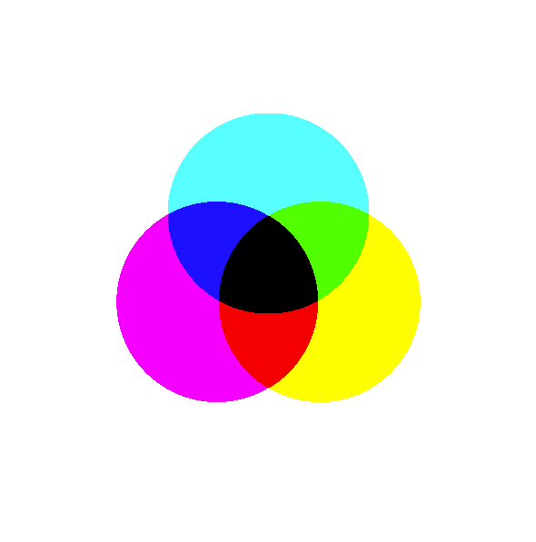

00 — Getting Started: How Computer Graphics Work
CMYK: colour on paper
Print works the opposite way round, which is why designers also talk about CMYK (Cyan, Magenta, Yellow, and Key/black). A printed page doesn't emit light — it reflects whatever light falls on it, and ink works by absorbing some of that light and letting the rest bounce back to your eye. Mixing ink together absorbs more and more light, so combining colours makes the result darker, not lighter — this is called a subtractive model, the opposite of RGB's additive mixing. Cyan, magenta and yellow ink together should absorb all light and produce black, but real ink is imperfect, so a fourth, true black ("Key") is added to get a proper black and to save on coloured ink for anything that's just grey or black text.
p5 sketches draw to a screen, not a printer, so p5 doesn't offer a CMYK mode — this is included here purely so the term means something when you meet it, e.g. designing something intended for print. Screen work stays in RGB (or the HSB/HSL models below); print work has to be converted to CMYK at some stage before it goes to a printer.

Figure: the CMYK subtractive equivalent of the RGB diagram above — three overlapping circles of cyan, magenta and yellow ink, with pairwise overlaps showing red, green and blue, and the centre where all three overlap showing a muddy near-black.